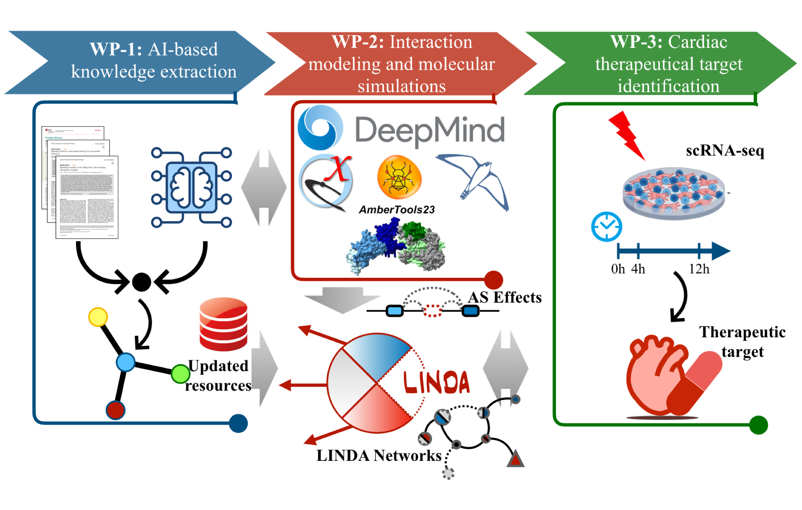

ALL-LINDA
Despite the unique ability to jointly model protein interaction networks on multi-cellular systems while at the same time to also account for the addition/removal of protein domains, the LINDA framework currently has some limitations. First, LINDA relies on established PPI/DDI and TF-Gene relation resources, which are typically incomplete and are not continuously updated. Additionally, these resources are heavily biased toward certain overrepresented medical conditions, particularly cancer, which makes their application in other medical contexts challenging. Moreover, the LINDA methodology has limitations in capturing the full dynamic effects of AS on protein interactions. Specifically LINDA, can only model one type of AS effects, namely exon-skipping, while other types remain unaccounted for. In addition to that, we can only model the effects of complete exon skipping or inclusion, resulting in the full addition or removal of protein domains, while partial splicing effects remain unconsidered. Finally, to better pinpoint the most likely signalling mechanisms from sequencing data, the LINDA framework would benefit from improved identifiability, as the current approach often produces for the same context or condition several equally plausible explanations of signalling mechanisms and how they are affected by splicing.
To address these challenges, we propose enhancing the current LINDA framework with Artificial Intelligence (AI), incorporating Large Language Models (LLMs) and AlphaFold3 (AF3) into an integrated framework called ALL-LINDA (Figure 8). More specifically, LLMs will be employed to mine the vast scientific literature, ensuring continuously updated knowledge of molecular interactions across pre-selected biological domains. Additionally, AlphaFold will be used to computationally validate protein interactions based on their folding structures and thermodynamic properties, thus ensuring a more accurate representation of molecular interactions. Molecular Dynamics (MD) simulations will also be performed following AlphaFold modelling to identify and account for thermodynamically more plausible interactions, thus alleviating some of the mentioned identifiability issues.

Figure 8: ALL-LINDA Workflow depicted thrrough Work-PackagesThis is work in progress and documentation on this project will be provided shortly.